下面是我整理下来的Servlet知识点:
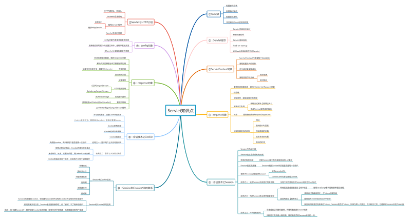

图上的知识点都可以在我其他的文章内找到相应内容。
Tomcat常见面试题
Tomcat的缺省端口是多少，怎么修改
Tomcat的缺省端口是多少，怎么修改
- 找到Tomcat目录下的conf文件夹
- 进入conf文件夹里面找到server.xml文件
- 打开server.xml文件
- 在server.xml文件里面找到下列信息
<Service name="Catalina">
<Connector port="8080" protocol="HTTP/1.1"
connectionTimeout="20000"
redirectPort="8443" />- 把port=”8080″改成port=”8888″，并且保存
- 启动Tomcat，并且在IE浏览器里面的地址栏输入http://127.0.0.1:8888/
到tomcat主目录下的conf/server.xml文件中修改,把8080端口改成是8088或者是其他的
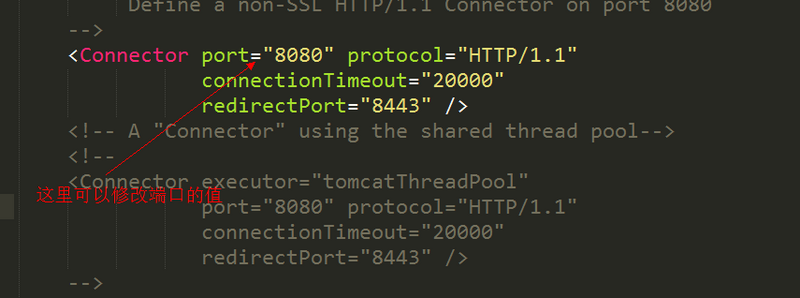
Tomcat 有哪几种Connector 运行模式(优化)？
tomcat 有哪几种Connector 运行模式(优化)？
- bio(blocking I/O)
- nio(non-blocking I/O)
- apr(Apache Portable Runtime/Apache可移植运行库)
相关解释:
- bio: 传统的Java I/O操作，同步且阻塞IO。
- nio: JDK1.4开始支持，同步阻塞或同步非阻塞IO
- aio(nio.2): JDK7开始支持，异步非阻塞IO
- apr: Tomcat将以JNI的形式调用Apache HTTP服务器的核心动态链接库来处理文件读取或网络传输操作，从而大大地 提高Tomcat对静态文件的处理性能
下面是配置Tomcat运行模式改成是NIO模式，并配置连接池相关参数来进行优化:
<!--
<Connector port="8080" protocol="HTTP/1.1"
connectionTimeout="20000"
redirectPort="8443" />
-->
<!-- protocol 启用 nio模式，(tomcat8默认使用的是nio)(apr模式利用系统级异步io) -->
<!-- minProcessors最小空闲连接线程数-->
<!-- maxProcessors最大连接线程数-->
<!-- acceptCount允许的最大连接数，应大于等于maxProcessors-->
<!-- enableLookups 如果为true,requst.getRemoteHost会执行DNS查找，反向解析ip对应域名或主机名-->
<Connector port="8080" protocol="org.apache.coyote.http11.Http11NioProtocol"
connectionTimeout="20000"
redirectPort="8443
maxThreads=“500”
minSpareThreads=“100”
maxSpareThreads=“200”
acceptCount="200"
enableLookups="false"
/>
apr模式启动起来是比较复杂的，详情可参考:http://blog.csdn.net/wanglei_storage/article/details/50225779
对于bio,nio,nio.2的理解可参考:http://blog.csdn.net/itismelzp/article/details/50886009
Tomcat有几种部署方式
- 直接把Web项目放在webapps下，Tomcat会自动将其部署
- 在server.xml文件上配置
<Context>节点，设置相关的属性即可 - 通过Catalina来进行配置:进入到confCatalinalocalhost文件下，创建一个xml文件，该文件的名字就是站点的名字。编写XML的方式来进行设置。
部署方式第二点：
- 在其他盘符下创建一个web站点目录，并创建WEB-INF目录和一个html文件。
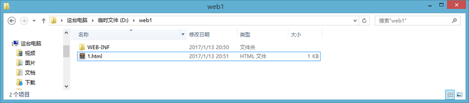
- 找到Tomcat目录下/conf/server.xml文件
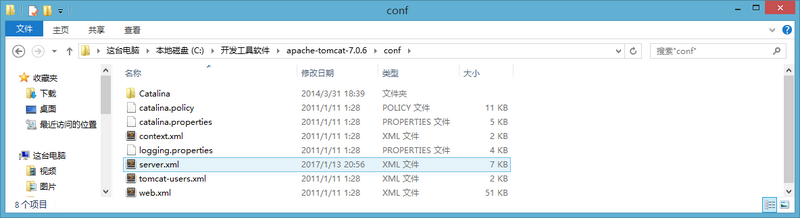
- 在server.xml中的<Host>节点下添加如下代码。path表示的是访问时输入的web项目名，docBase表示的是站点目录的绝对路径
<Context path="/web1" docBase="D:\web1"/>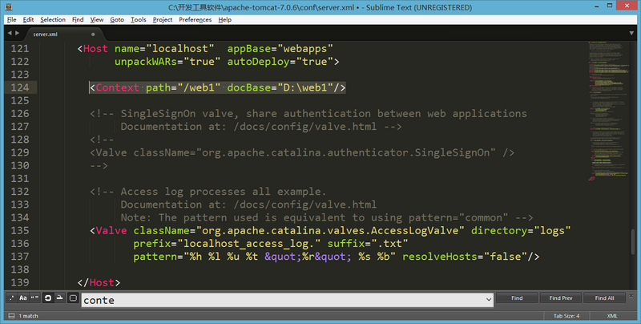
- 访问配置好的web站点
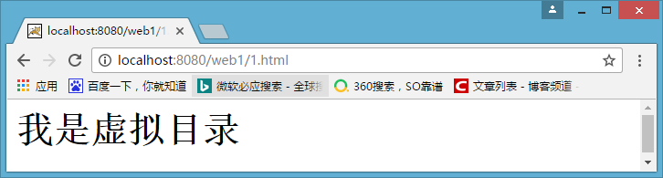
部署方式第三点：
- 进入到confCatalinalocalhost文件下，创建一个xml文件，该文件的名字就是站点的名字。
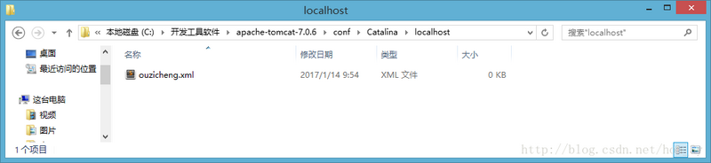
- xml文件的代码如下，docBase是你web站点的绝对路径
<?xml version="1.0" encoding="UTF-8"?>
<Context
docBase="D:\web1"
reloadable="true">
</Context> - 访问web站点下的html资源
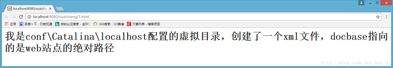
Servlet面试题
Servlet生命周期
Servlet生命周期?
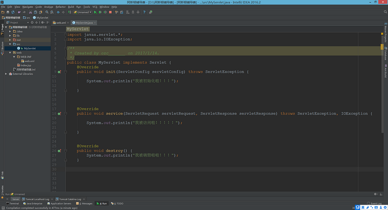
- 第一次访问Servlet，我们发现init()和service()都被调用了
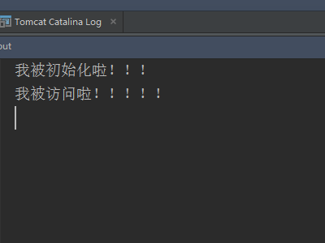
- 第二次访问Servlet，service()被调用了
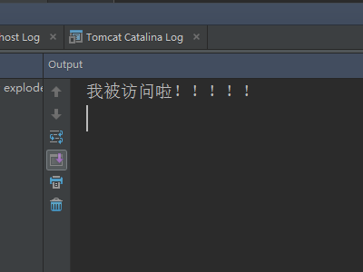
- 第三次访问Servlet，还是service()被调用了
- 当我们关闭Tomcat服务器的时候，destroy()被调用了！
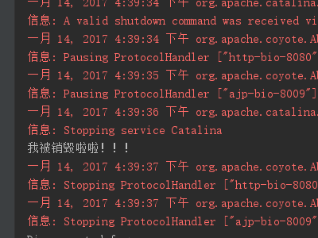
Servlet生命周期可分为5个步骤
- 加载Servlet。当Tomcat第一次访问Servlet的时候，Tomcat会负责创建Servlet的实例
- 初始化。当Servlet被实例化后，Tomcat会调用init()方法初始化这个对象
- 处理服务。当浏览器访问Servlet的时候，Servlet 会调用service()方法处理请求
- 销毁。当Tomcat关闭时或者检测到Servlet要从Tomcat删除的时候会自动调用destroy()方法，让该实例释放掉所占的资源。一个Servlet如果长时间不被使用的话，也会被Tomcat自动销毁
- 卸载。当Servlet调用完destroy()方法后，等待垃圾回收。如果有需要再次使用这个Servlet，会重新调用init()方法进行初始化操作。
- 简单总结：只要访问Servlet，service()就会被调用。init()只有第一次访问Servlet的时候才会被调用。destroy()只有在Tomcat关闭的时候才会被调用。
get方式和post方式有何区别
get方式和post方式有何区别
数据携带上:
- GET方式：在URL地址后附带的参数是有限制的，其数据容量通常不能超过1K。
- POST方式：可以在请求的实体内容中向服务器发送数据，传送的数据量无限制。
请求参数的位置上:
- GET方式：请求参数放在URL地址后面，以?的方式来进行拼接
- POST方式:请求参数放在HTTP请求包中
用途上:
- GET方式一般用来获取数据
-
POST方式一般用来提交数据
-
原因:
- 首先是因为GET方式携带的数据量比较小，无法带过去很大的数量
- POST方式提交的参数后台更加容易解析(使用POST方式提交的中文数据，后台也更加容易解决)
- GET方式比POST方式要快
-
GET方式比POST方式要快，详情可看:https://www.cnblogs.com/strayling/p/3580048.html
Servlet相关 API
doGet与doPost方法的两个参数是什么
- HttpServletRequest：封装了与请求相关的信息
- HttpServletResponse：封装了与响应相关的信息
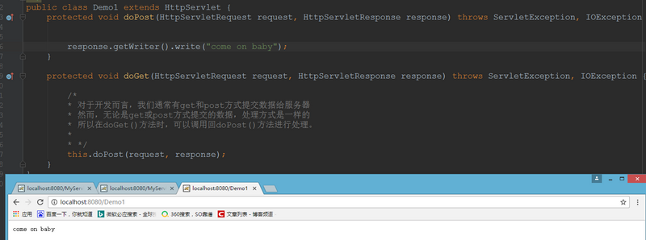
获取页面的元素的值有几种方式，分别说一下
- request.getParameter() 返回客户端的请求参数的值
- request.getParameterNames() 返回所有可用属性名的枚举
- request.getParameterValues() 返回包含参数的所有值的数组
request.getAttribute()和request.getParameter()区别
用途上:
- request.getAttribute()， 一般用于获取request域对象的数据(在跳转之前把数据使用setAttribute来放到request对象上)
- request.getParameter()， 一般用于获取客户端提交的参数
存储数据上:
- request.getAttribute()可以获取Objcet对象
- request.getParameter()只能获取字符串(这也是为什么它一般用于获取客户端提交的参数)
forward和redirect的区别
forward和redirect的区别
实际发生位置不同，地址栏不同
-
转发是发生在服务器的
- 转发是由服务器进行跳转的，细心的朋友会发现，在转发的时候，浏览器的地址栏是没有发生变化的，在我访问Servlet111的时候，即使跳转到了Servlet222的页面，浏览器的地址还是Servlet111的。也就是说浏览器是不知道该跳转的动作，转发是对浏览器透明的。通过上面的转发时序图我们也可以发现，实现转发只是一次的http请求，一次转发中request和response对象都是同一个。这也解释了，为什么可以使用request作为域对象进行Servlet之间的通讯。
-
-
重定向是发生在浏览器的
- **重定向是由浏览器进行跳转的**，进行重定向跳转的时候，**浏览器的地址会发生变化的**。曾经介绍过：实现重定向的原理是由response的状态码和Location头组合而实现的。**这是由浏览器进行的页面跳转**实现重定向**会发出两个http请求**，**request域对象是无效的，因为它不是同一个request对象** -
用法不同:
-
很多人都搞不清楚转发和重定向的时候，资源地址究竟怎么写。有的时候要把应用名写上，有的时候不用把应用名写上。很容易把人搞晕。记住一个原则： 给服务器用的直接从资源名开始写，给浏览器用的要把应用名写上
-
request.getRequestDispatcher("/资源名 URI").forward(request,response)
- 转发时"/"代表的是本应用程序的根目录【zhongfucheng】
-
response.send("/web应用/资源名 URI");
- 重定向时"/"代表的是webapps目录
-
-
-
能够去往的URL的范围不一样:
- 转发是服务器跳转只能去往当前web应用的资源
- 重定向是服务器跳转，可以去往任何的资源
-
传递数据的类型不同
- 转发的request对象可以传递各种类型的数据，包括对象
- 重定向只能传递字符串
-
跳转的时间不同
- 转发时：执行到跳转语句时就会立刻跳转
- 重定向：整个页面执行完之后才执行跳转
那么转发(forward)和重定向(redirect)使用哪一个？
- 根据上面说明了转发和重定向的区别也可以很容易概括出来。转发是带着转发前的请求的参数的。重定向是新的请求。
典型的应用场景：
- 转发: 访问 Servlet 处理业务逻辑，然后 forward 到 jsp 显示处理结果，浏览器里 URL 不变
- 重定向: 提交表单，处理成功后 redirect 到另一个 jsp，防止表单重复提交，浏览器里 URL 变了
tomcat容器是如何创建servlet类实例？用到了什么原理？
tomcat容器是如何创建servlet类实例？用到了什么原理
- 当容器启动时，会读取在webapps目录下所有的web应用中的web.xml文件，然后对 xml文件进行解析，并读取servlet注册信息。然后，将每个应用中注册的servlet类都进行加载，并通过 反射的方式实例化。（有时候也是在第一次请求时实例化）
- 在servlet注册时加上<load-on-startup>1</load-on-startup>如果为正数，则在一开始就实例化，如果不写或为负数，则第一次请求实例化。
什么是cookie？Session和cookie有什么区别？
什么是cookie？
Cookie是由W3C组织提出，最早由netscape社区发展的一种机制
- 网页之间的交互是通过HTTP协议传输数据的，而Http协议是无状态的协议。无状态的协议是什么意思呢？一旦数据提交完后，浏览器和服务器的连接就会关闭，再次交互的时候需要重新建立新的连接。
- 服务器无法确认用户的信息，于是乎，W3C就提出了：给每一个用户都发一个通行证，无论谁访问的时候都需要携带通行证，这样服务器就可以从通行证上确认用户的信息。通行证就是Cookie
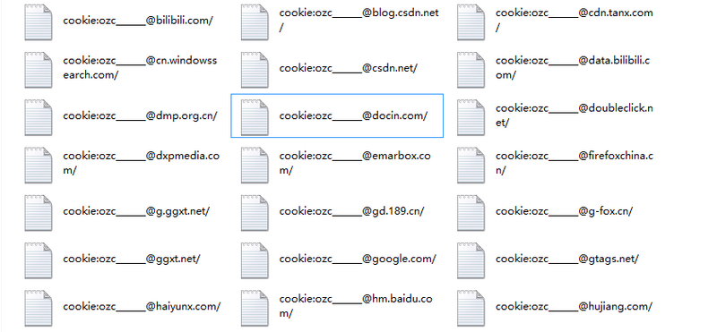
Session和cookie有什么区别？
-
从存储方式上比较
- Cookie只能存储字符串，如果要存储非ASCII字符串还要对其编码。
- Session可以存储任何类型的数据，可以把Session看成是一个容器
-
从隐私安全上比较
- Cookie存储在浏览器中，对客户端是可见的。信息容易泄露出去。如果使用Cookie，最好将Cookie加密
- Session存储在服务器上，对客户端是透明的。不存在敏感信息泄露问题。
-
从有效期上比较
- Cookie保存在硬盘中，只需要设置maxAge属性为比较大的正整数，即使关闭浏览器，Cookie还是存在的
- Session的保存在服务器中，设置maxInactiveInterval属性值来确定Session的有效期。并且Session依赖于名为JSESSIONID的Cookie，该Cookie默认的maxAge属性为-1。如果关闭了浏览器，该Session虽然没有从服务器中消亡，但也就失效了。
-
从对服务器的负担比较
- Session是保存在服务器的，每个用户都会产生一个Session，如果是并发访问的用户非常多，是不能使用Session的，Session会消耗大量的内存。
- Cookie是保存在客户端的。不占用服务器的资源。像baidu、Sina这样的大型网站，一般都是使用Cookie来进行会话跟踪。
-
从浏览器的支持上比较
- 如果浏览器禁用了Cookie，那么Cookie是无用的了！
- 如果浏览器禁用了Cookie，Session可以通过URL地址重写来进行会话跟踪。
-
从跨域名上比较
- Cookie可以设置domain属性来实现跨域名
- Session只在当前的域名内有效，不可夸域名
Servlet安全性问题
由于Servlet是单例的，当多个用户访问Servlet的时候，服务器会为每个用户创建一个线程。当多个用户并发访问Servlet共享资源的时候就会出现线程安全问题。
原则：
- 如果一个变量需要多个用户共享，则应当在访问该变量的时候，加同步机制synchronized (对象){}
- 如果一个变量不需要共享，则直接在 doGet() 或者 doPost()定义.这样不会存在线程安全问题
如果文章有错的地方欢迎指正，大家互相交流。习惯在微信看技术文章的同学，可以关注微信公众号:Java3y